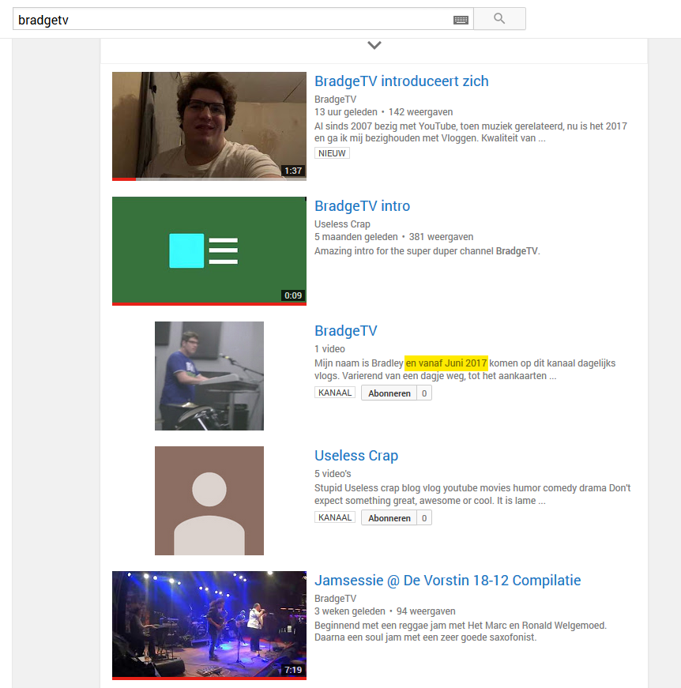

Bradge verwijdert YouTube kanaal?
Hieronder een overzicht van de Bradge kanaaltjes, voorzover achteraf na te gaan.
MrBradge
Februari 2016 - juli 20161
BradgeTV (4)
9 januari 20171
Welkom bij BradgeTV. Je kan hier verschillende vlogs verwachten. Variërend van een daily vlog waarin ik mijn hele dag gewoon openstel voor jullie als het ware, een dagje weg waarin ik, mja, iets onderneem, een weekend weg, een week weg, je weet het niet. Ik neem onderwerpen door met jullie. Ik geef mezelf deels een beetje bloot. Bepaalde dingetjes over mijn leven kunnen wel aan bod komen. En er komen nieuwsberichten aan bod die ik van Nu.nl, Telegraaf.nl, Prive.nl of FOK!Forum.nl, want die hebben ook een frontpage, af kan halen.
Ook zal de kwaliteit van de video's kunnen verschillen. De content is wel in HD, maar ik heb verschillende camera's. Zo is dit geschoten met de Sony CX130. Is dit geschoten met de frontcam van mijn Samsung Galaxy S7. Is dit geschoten met een Canon FS200. Is dit gefilmd met een JVC MS100. En is ten slotte dit gefilmd met mijn Sony WX500.
Ik hoop dat jullie veel plezier gaan hebben van mijn filmpjes en van mijn kanaal.
Als jullie ook wat willen weten over mijn muzikale uitspattingen: onder de beschrijving staat een link naar mijn andere kanaal BradgeMusicFault [sic] waarin ik keyboard speel, gitaar speel en met de band dingen online gooi en jamsessies bezoek en daar compilaties van maak en ook online gooi. En andere muzikale ontwikkelen kunnen daar ook komen.
Voor vlogs moet je hier wezen. Bij BradgeTV. Tot ziens!

BradgeMusicVault
januari 2017 - 1
BradgeTV (5)
1 maart 2017 - 12 april 2017
Kanaal is weg omdat ik het anders wil aanpakken, niet meer van die korte nietszeggende video's die ik puur uploadde vanwege het feit dat er inkomsten behaald mee konden worden (En ik er mijzelf enorm mee voor lul zette)
1Ik wil een serieuze community en following gaan proberen te krijgen, en dus niet alleen maar FOK!kers die het leuk vinden om mij te volgen omdat leedvermaak.
Eerst even aan mezelf werken:
- Haar er af
- Nettere kleding
- Kilo's kwijt
- Lekkerder in m'n vel
TheBradge/Keyboardist
1 november 2018 - 1
Een Engelstalig kanaal waarop keyboard-gerelateerde zaken werden gepost.
BradgeTV
18 maart 2020 - 1
Nederlandse vlogger/BradgeTV
10 mei 2021 - 25 augustus 2021
Een kanaal met veel foodreviews van 'gezond' eten.
BradgeTV
30 augustus 2021 - 9 september 2021
Dit kanaal bestaat nog, maar Bradge stopte met uploaden omdat hij naar eigen zeggen 'zijn wachtwoord was vergeten.' Het kanaal is hier te vinden.
{kind=link}
BradgeVlogs
13 oktober 2021 - maart 2022
Zoals gewoonlijk was Braddie na een week weer terug, dit keer onder de naam BradgeVlogs en dit keer ook op TikTok te vinden.
{kind=link}